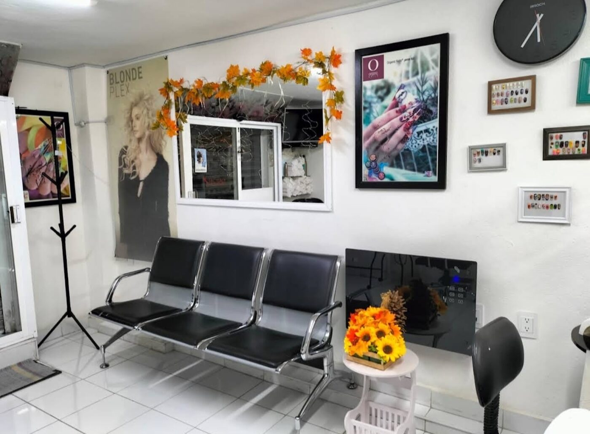
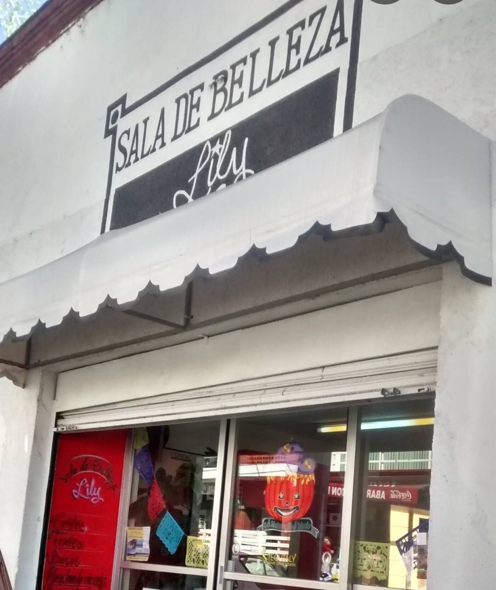
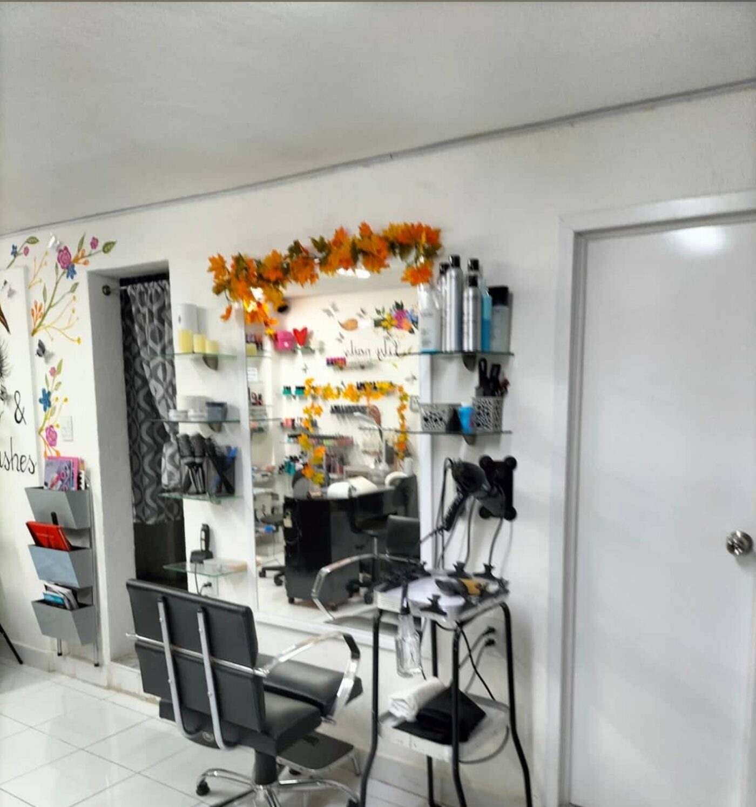
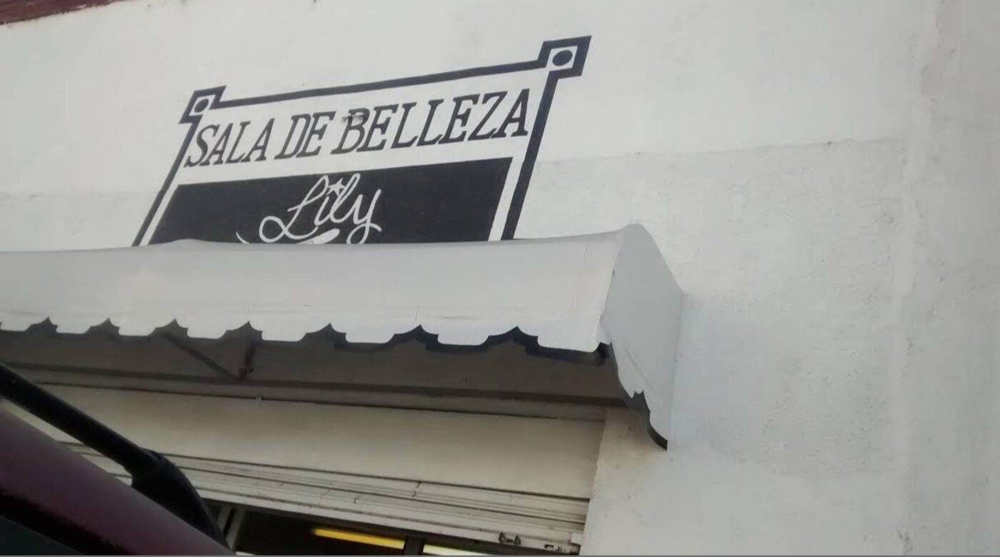

Cortes & Tintes
Cortes de cabello y color a la medida, pensados para cada tipo de rostro y estilo de vida.

Centro de Santiago Tianguistenco
Sala de Belleza Lily es un espacio de confianza en el corazón del Centro, donde el cabello, las uñas y la piel se atienden con la calma y el detalle de un salón de barrio que conoce a cada clienta por su nombre.
Lo que hacemos
Cortes de cabello y color a la medida, pensados para cada tipo de rostro y estilo de vida.
Peinados para el día a día, fiestas, novias y quinceañeras.
Manicure de uñas, pedicure, tinte y decoración en uñas.
Realce para la mirada, con acabado natural o dramático.
Depilación con cera para un acabado suave y duradero.
Servicio de afeitado clásico, con navaja y toalla caliente.
Arreglo completo para el día más especial, con cita previa.
Precios sujetos a consulta directa en el salón — solicita tu cotización antes de tu cita.
Un vistazo por dentro
Fotografías reales de nuestro espacio en el Centro: la sala de espera, las estaciones de trabajo y la fachada que reconocerás sobre Av. Benito Juárez.



Sobre nosotras
Sala de Belleza Lily nació como un negocio de barrio en el Centro de Santiago Tianguistenco de Galeana, donde la estilista Lily atiende personalmente cada corte, tinte y arreglo de uñas.
Después de años en el mismo local, muchas clientas regresan por la misma razón: un trato cercano, tranquilo y de confianza — el tipo de salón donde te conocen por tu nombre y no por un número de cita.
"Mi estilista se llama Lily y tengo que decir que es la mejor en su trabajo." — Mari Saturnino, clienta
Cuándo visitarnos
Lo que dicen de nosotras
"Mi estilista se llama Lily y tengo que decir que es la mejor en su trabajo."
"Muy amables, pero la ubicación sí está un poco escondida. Buen servicio."
"Lugar tranquilo. Buen servicio."
Encuéntranos
La entrada está señalada con nuestro letrero pintado a mano y una cortina roja — busca el toldo blanco sobre la avenida.
Esta página es una demostración. Los botones de contacto directo (WhatsApp, llamadas, redes sociales) se activarán cuando el negocio confirme sus datos de contacto.